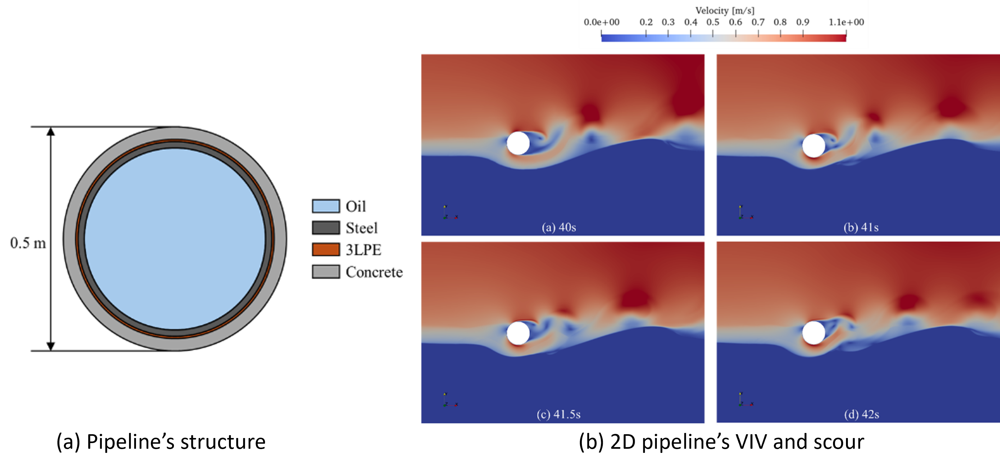

Numerical investigation of coupled vortex-induced vibration and scour of subsea pipelines under ocean currents

Abstract
Sediment transport beneath subsea pipelines is essentially a highly complex multiphase flow problem, involving strong coupling between hydrodynamics, structural response, and sediment transfer. Accurately capturing this process is of significant scientific and engineering importance for predicting seabed evolution and ensuring the structural safety and stability of subsea pipelines. In this study, the coupled vortex-induced vibration (VIV) and scour behaviour of subsea pipelines under steady current conditions is investigated using a computational fluid dynamics (CFD)-based numerical approach. The solver is developed within SedFoam by incorporating dynamic mesh motion to account for pipeline vibration. The pipeline is modelled as a single-degree-of-freedom system with a vertically mounted spring and a concentrated mass. The numerical results reveal a strong interaction between pipeline VIV and the evolving seabed morphology. Repeated pipeline motion toward the seabed significantly modifies the local scour profile and promotes the formation of a sand dune beneath the pipeline. The presence of the sand dune alters the near-bed flow field and suppresses vortex shedding beneath the pipeline. As the scour process develops and the fluid–structure–seabed interaction intensifies, the VIV response of the pipeline is progressively reduced. The present study highlights the important coupling mechanisms between pipeline vibration and seabed scour and provides insights into the dynamic evolution of pipeline–seabed interaction.
Read the published article ↗